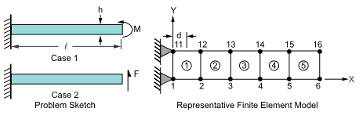
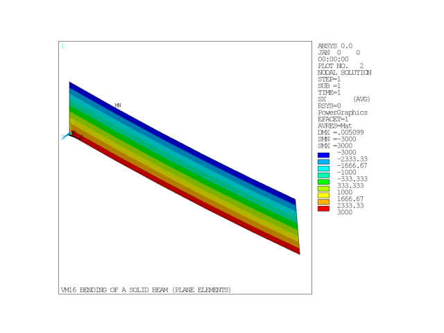
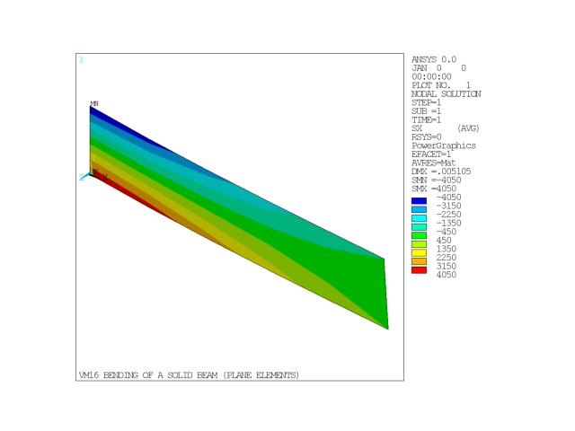
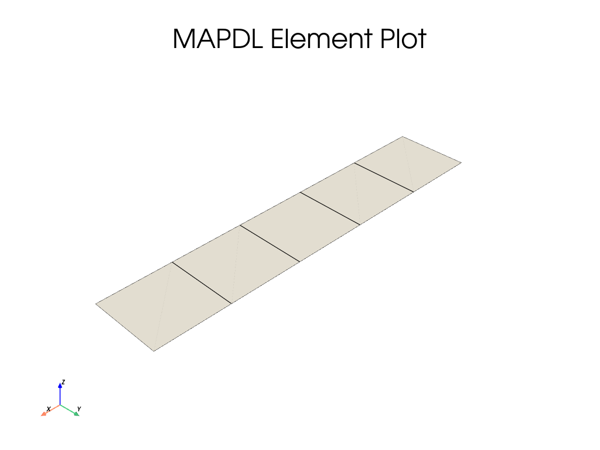
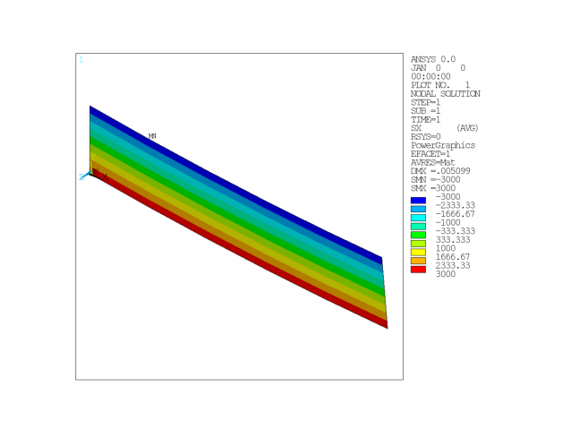
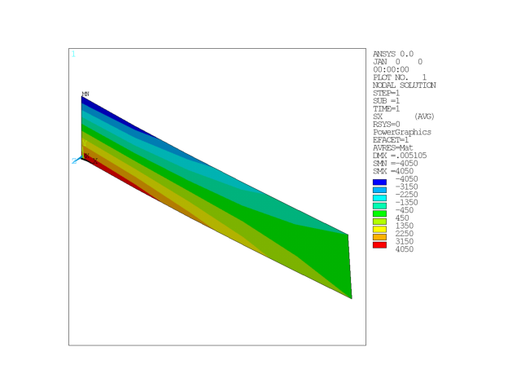

Note
Go to the end to download the full example code
Bending of a Solid Beam (Plane Elements)#
- Problem description:
A beam of length \(l\) and height \(h\) is built-in at one end and loaded at the free end with:
Case 1: a moment \(M\).
Case 2: a shear force \(F\).
For each case, determine the deflection \(\delta\) at the free end and the bending stress \(\sigma_{Bend}\) a distance d from the wall at the outside fiber.
- Reference:
Formulas for Stress and Strain, R. J. Roark, 4th Edition, McGraw-Hill Book Co., Inc., New York, NY, 1965, pp. 104, 106.
- Analysis type(s):
Static Analysis
ANTYPE=0
- Element type(s):
2-D Structural Solid Elements (PLANE42)
2-D 4 Node structural elements(PLANE182)
{kind=link}

- Material properties:
\(E = 30 \cdot 10^6 psi\)
\(\mu = 0.0\)
- Geometric properties:
\(l = 10 in\)
\(h = 2.0 in\)
\(d = 1.0 in\)
- Loading:
Case 1, \(M = 2000 in-lb\)
Case 2, \(F = 300 lb\)
- Analysis Assumptions and Modeling Notes:
The stiffness matrix formed in the first load step is also used in the second load step (automatically determined by Mechanical APDL). The end moment is represented by equal and opposite forces separated by a distance h. The bending stress is obtained from face stresses on element 1.
# sphinx_gallery_thumbnail_path = '_static/vm16_setup.png'
# Importing the `launch_mapdl` function from the `ansys.mapdl.core` module
from ansys.mapdl.core import launch_mapdl
import pandas as pd
# Launch MAPDL with specified options
mapdl = launch_mapdl(loglevel="WARNING", print_com=True, remove_temp_dir_on_exit=True)
# Clear the existing database
mapdl.clear()
# Run the FINISH command to exists normally from a processor
mapdl.finish()
# Run a /VERIFY command to verify the installation
mapdl.run("/VERIFY,VM16")
# Set the ANSYS version and reference verification manual
mapdl.com("ANSYS MEDIA REL. 2022R2 (05/13/2022) REF. VERIF. MANUAL: REL. 2022R2")
# Set the analysis title
mapdl.title("VM16 BENDING OF A SOLID BEAM (PLANE ELEMENTS)")
TITLE=
VM16 BENDING OF A SOLID BEAM (PLANE ELEMENTS)
Case 1: Solve Using PLANE42 Element Model.#
Enter the model creation prep7 preprocessor
mapdl.prep7(mute=True)
Define element type and properties#
Use 2-D Structural Solid (PLANE42) and include Surface solution for both faces, via Keyopt(6)=2.
mapdl.et(
1, "PLANE42", "", "", "", "", "", 2
) # PLANE42 WITH SURFACE PRINTOUT FOR FACES 1 AND 3
1
Define material#
Set up the material and its type (a single material), Young’s modulus of 30e6 and Poisson’s ratio of 0.0 is specified.
mapdl.mp("EX", 1, 30e6) # Elastic modulus
mapdl.mp("NUXY", 1, 0.0) # Poisson's ratio
MATERIAL 1 NUXY = 0.000000
Define geometry#
Set up the nodes and elements. This creates a mesh just like in the problem setup.
mapdl.n(1)
mapdl.n(6, 10)
# Generate additional nodes
mapdl.fill()
# Generates nodes from an existing pattern
mapdl.ngen(2, 10, 1, 6, 1, "", 2)
# Define elements
mapdl.e(1, 2, 12, 11)
# Generate additional elements from an existing pattern
mapdl.egen(5, 1, 1)
# select all entities
mapdl.allsel()
# element plot
mapdl.eplot(background="w")

Define boundary conditions and loadings#
Fix all degrees of freedom (dof) at nodes 10 & 11. For load case 1, apply end moment and then exit prep7 processor.
# Set boundary conditions for case 1 (end moment)
mapdl.d(1, "ALL", "", "", 11, 10) # Displacement constraint
mapdl.f(6, "FX", 1000) # Applied force
mapdl.f(16, "FX", -1000) # Applied force
# Finish the pre-processing processor
mapdl.finish()
***** ROUTINE COMPLETED ***** CP = 0.000
Solve#
Enter solution mode and solve the system for the 1st load case.
mapdl.slashsolu()
# Set analysis type to static
mapdl.antype("STATIC")
# start solve for 1st load case
mapdl.solve()
# exists solution processor
mapdl.finish()
FINISH SOLUTION PROCESSING
***** ROUTINE COMPLETED ***** CP = 0.000
Post-processing#
Enter post-processing. Compute deflection and stress components for load case 1.
mapdl.post1()
# Set "last" load case to be read from result file for post-processing
mapdl.set("LAST")
# Get displacement at node 16 in the Y-direction
u1 = mapdl.get("U1", "NODE", 16, "U", "Y")
mapdl.graphics("POWER") # Activates the graphics mode for power graphics
mapdl.eshape(1) # Display element shape
mapdl.view(1, 1, 1, 1) # Set the viewing options
# for graphics displays
mapdl.show(option="REV", fname="png")
mapdl.plnsol("S", "X") # Plot bending stress along the X-axis
# Get maximum bending stress for case 1
bend_stress1 = mapdl.get("BEND_STRESS1", "PLNSOL", 0, "MAX")
mapdl.show("close")
# exists solution processor for case 1
mapdl.finish()

EXIT THE MAPDL POST1 DATABASE PROCESSOR
***** ROUTINE COMPLETED ***** CP = 0.000
Solve#
Enter solution mode and solve the system for the 2nd load case.
mapdl.slashsolu()
***** MAPDL SOLUTION ROUTINE *****
Define boundary conditions and loadings#
For load case 2, apply end load and then solve for 2nd load case.
mapdl.f(6, "FX", "", "", 16, 10) # Applied force in the X-direction
mapdl.f(6, "FY", 150, "", 16, 10) # Applied force in the Y-direction
# start solve for 2nd load case
mapdl.solve()
# exists solution processor for case 2
mapdl.finish()
FINISH SOLUTION PROCESSING
***** ROUTINE COMPLETED ***** CP = 0.000
Post-processing#
Enter post-processing. Compute deflection and stress components for load case 2.
mapdl.post1()
# Set "last" load case to be read from result file for post-processing
mapdl.set("LAST")
# Retrieves the displacement "U2" of node 16 in the Y direction
u2 = mapdl.get("U2", "NODE", 16, "U", "Y")
mapdl.graphics("POWER") # Activates the graphics mode for power graphics
mapdl.eshape(1) # Display element shape
mapdl.view(1, 1, 1, 1) # Set the viewing options
# for graphics displays
mapdl.show(option="REV", fname="png")
mapdl.plnsol("S", "X") # Plot bending stress along the X-axis
# Retrieves the maximum bending stress from the plane stress plot
bend_stress2 = mapdl.get("BEND_STRESS2", "PLNSOL", 0, "MAX")
mapdl.show("close")

Verify the results.#
# Set target values
target_def = [0.00500, 0.00500]
target_strss = [3000, 4050]
# Fill result values
res_def = [u1, u2]
res_strss = [bend_stress1, bend_stress2]
title = f"""
------------------- VM16 RESULTS COMPARISON ---------------------
PLANE42
=======
"""
print(title)
col_headers = ["TARGET", "Mechanical APDL", "RATIO"]
row_headers = ["Deflection (in)", "Bending Stress (psi)"]
for lc in range(len(res_def)):
data = [
[target_def[lc], res_def[lc], abs(target_def[lc] / res_def[lc])],
[target_strss[lc], abs(res_strss[lc]), abs(target_strss[lc] / res_strss[lc])],
]
title = f"""
RESULTS FOR CASE {lc+1:1d}:
-------------------
"""
print(title)
print(pd.DataFrame(data, row_headers, col_headers))
------------------- VM16 RESULTS COMPARISON ---------------------
PLANE42
=======
RESULTS FOR CASE 1:
-------------------
TARGET Mechanical APDL RATIO
Deflection (in) 0.005 0.005 1.0
Bending Stress (psi) 3000.000 3000.000 1.0
RESULTS FOR CASE 2:
-------------------
TARGET Mechanical APDL RATIO
Deflection (in) 0.005 0.00505 0.990099
Bending Stress (psi) 4050.000 4050.00000 1.000000
Finish the post-processing processor.#
mapdl.finish()
EXIT THE MAPDL POST1 DATABASE PROCESSOR
***** ROUTINE COMPLETED ***** CP = 0.000
Clears the database without restarting.#
mapdl.run("/CLEAR,NOSTART")
CLEAR MAPDL DATABASE AND RESTART
Ansys Mechanical Enterprise Academic Student
Case 2: Solve Using PLANE182 Element Model#
Switches to the preprocessor (PREP7)
mapdl.prep7()
*****MAPDL VERIFICATION RUN ONLY*****
DO NOT USE RESULTS FOR PRODUCTION
***** MAPDL ANALYSIS DEFINITION (PREP7) *****
Define element type and properties#
Use 2-D 4 Node structural elements (PLANE182) and include simplified enhanced strain formulation, via Keyopt(1)=3.
# Defines an element type as PLANE182
mapdl.et(1, "PLANE182")
# Sets a key option for the element type
mapdl.keyopt(1, 1, 3)
ELEMENT TYPE 1 IS PLANE182 2-D 4-NODE PLANE STRS SOLID
KEYOPT( 1- 6)= 3 0 0 0 0 0
KEYOPT( 7-12)= 0 0 0 0 0 0
KEYOPT(13-18)= 0 0 0 0 0 0
CURRENT NODAL DOF SET IS UX UY
TWO-DIMENSIONAL MODEL
Define material#
Set up the material and its type (a single material), Young’s modulus of 30e6 and Poisson’s ratio of 0.0 is specified.
mapdl.mp("EX", 1, 30e6)
mapdl.mp("NUXY", 1, 0.0)
MATERIAL 1 NUXY = 0.000000
Define geometry#
Set up the nodes and elements. This creates a mesh just like in the problem setup.
# Defines nodes
mapdl.n(1)
mapdl.n(6, 10)
# Generate additional nodes
mapdl.fill()
# Generates additional nodes from an existing pattern
mapdl.ngen(2, 10, 1, 6, 1, "", 2)
# Defines elements
mapdl.e(1, 2, 12, 11)
# Generates additional elements from an existing pattern
mapdl.egen(5, 1, 1)
# select all entities
mapdl.allsel()
# element plot
mapdl.eplot(background="w")

Define boundary conditions and loadings#
Fix all degrees of freedom (dof) at nodes 10 & 11. For load case 1, apply end moment and then exit prep7 processor.
mapdl.d(1, "ALL", "", "", 11, 10)
# Applies nodal forces
mapdl.f(6, "FX", 1000)
mapdl.f(16, "FX", -1000)
# exists solution processor
mapdl.finish()
***** ROUTINE COMPLETED ***** CP = 0.000
Solve#
Enter solution mode and solve the system for the 1st load case.
mapdl.slashsolu()
# Set analysis type to static
mapdl.antype("STATIC")
# start solve for 1st load case
mapdl.solve()
# exists solution processor
mapdl.finish()
FINISH SOLUTION PROCESSING
***** ROUTINE COMPLETED ***** CP = 0.000
Post-processing#
Enter post-processing. Compute deflection and stress components for load case 1.
mapdl.post1()
# Sets the LAST result as the active result set
mapdl.set("LAST")
# Retrieves the displacement "U1" of node 16 in the Y direction
u1 = mapdl.get("U1", "NODE", 16, "U", "Y")
mapdl.graphics("POWER") # Activates the graphics mode for power graphics
mapdl.eshape(1) # Display element shape
mapdl.view(1, 1, 1, 1) # Set the viewing options
# for graphics displays
mapdl.show(option="REV", fname="png")
mapdl.plnsol("S", "X") # Plot bending stress along the X-axis
# Retrieves the maximum bending stress from the plane stress plot
bend_stress1 = mapdl.get("BEND_STRESS1", "PLNSOL", 0, "MAX")
mapdl.show("close")
# exists solution processor for case 1
mapdl.finish()

EXIT THE MAPDL POST1 DATABASE PROCESSOR
***** ROUTINE COMPLETED ***** CP = 0.000
Solve#
Enter solution mode and solve the system for the 2nd load case.
mapdl.slashsolu()
***** MAPDL SOLUTION ROUTINE *****
Define boundary conditions and loadings#
For load case 2, apply end load and then solve for 2nd load case.
mapdl.f(6, "FX", "", "", 16, 10)
mapdl.f(6, "FY", 150, "", 16, 10)
# start solve for 2nd load case
mapdl.solve()
# exists solution processor for case 2
mapdl.finish()
FINISH SOLUTION PROCESSING
***** ROUTINE COMPLETED ***** CP = 0.000
Post-processing#
Enter post-processing. Compute deflection and stress components for load case 2.
mapdl.post1()
# Sets the LAST result as the active result set
mapdl.set("LAST")
# Retrieves the displacement "U2" of node 16 in the Y direction
u2 = mapdl.get("U2", "NODE", 16, "U", "Y")
mapdl.graphics("POWER") # Activates the graphics mode for power graphics
mapdl.eshape(1) # Display element shape
mapdl.view(1, 1, 1, 1) # Set the viewing options
# for graphics displays
mapdl.show(option="REV", fname="png")
mapdl.plnsol("S", "X") # Plot bending stress along the X-axis
# Retrieves the maximum bending stress from the plane stress plot
bend_stress2 = mapdl.get("BEND_STRESS2", "PLNSOL", 0, "MAX")
mapdl.show("close")

Verify the results.#
# Set target values
target_def = [0.00500, 0.00500]
target_strss = [3000, 4050]
# Fill result values
res_def = [u1, u2]
res_strss = [bend_stress1, bend_stress2]
title = f"""
PLANE182
========
"""
print(title)
col_headers = ["TARGET", "Mechanical APDL", "RATIO"]
row_headers = ["Deflection (in)", "Bending Stress (psi)"]
for lc in range(len(res_def)):
data = [
[target_def[lc], res_def[lc], abs(target_def[lc] / res_def[lc])],
[target_strss[lc], abs(res_strss[lc]), abs(target_strss[lc] / res_strss[lc])],
]
title = f"""
RESULTS FOR CASE {lc+1:1d}:
-------------------
"""
print(title)
print(pd.DataFrame(data, row_headers, col_headers))
PLANE182
========
RESULTS FOR CASE 1:
-------------------
TARGET Mechanical APDL RATIO
Deflection (in) 0.005 0.005 1.0
Bending Stress (psi) 3000.000 3000.000 1.0
RESULTS FOR CASE 2:
-------------------
TARGET Mechanical APDL RATIO
Deflection (in) 0.005 0.00505 0.990099
Bending Stress (psi) 4050.000 4050.00000 1.000000
Finish the post-processing processor.#
mapdl.finish()
# Exit MAPDL session
mapdl.exit()
Total running time of the script: (0 minutes 2.068 seconds)